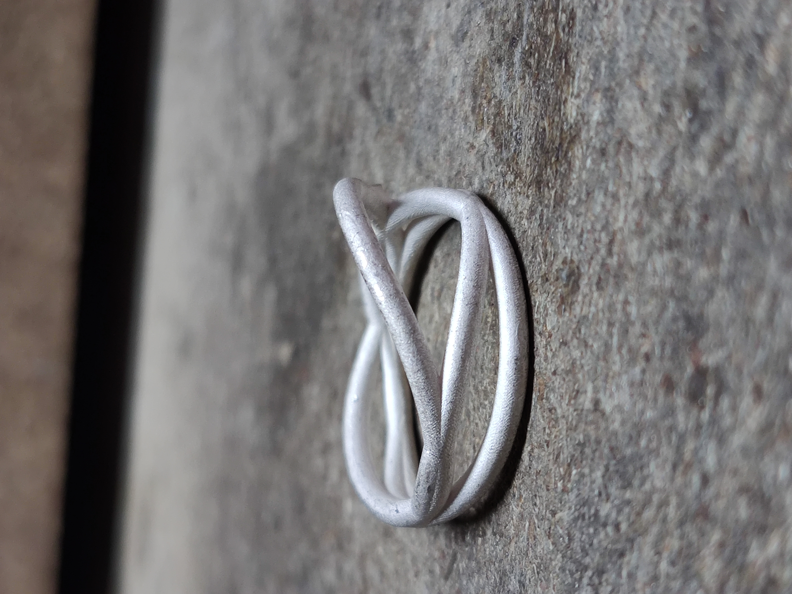
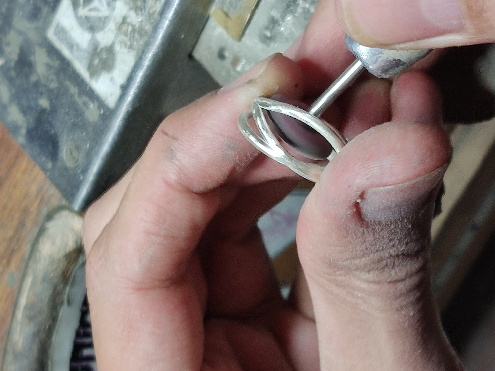
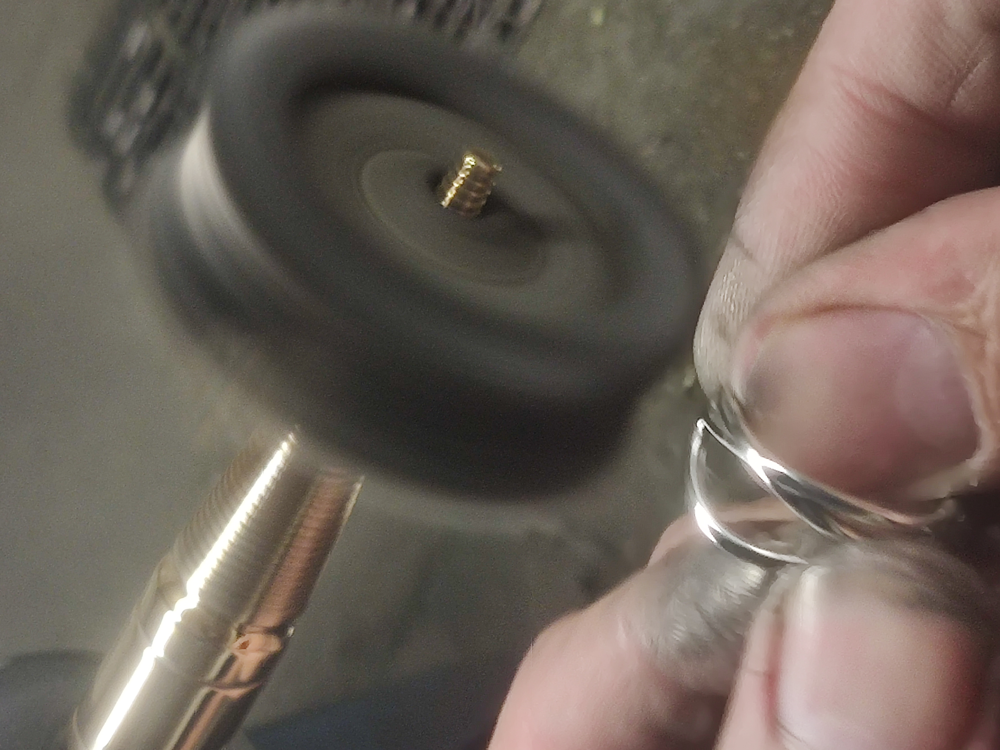

Fabrication
Once the users find the ring that they like, it is automatically modeled on Maya and the 3D model is sent to the jeweler. Each of the model is 3D printed and cast, so each of the pieces are unique.



